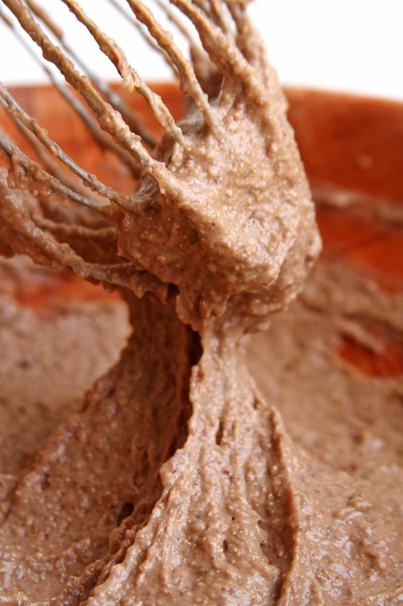

INGREDIENTES SECOS
1/2 xícara de sementes de girassol (bata as sementes no liquidificador até virar uma farinha grossa)
1/2 xícara de fécula de batata (substitua por amido de milho, araruta ou polvilho doce)
1 colher de sopa de fermento biológico instantâneo (ou um pacotinho de 10 gramas)
1 colher de chá rasa de sal
1/2 colher de chá de goma xantana (opcional, confira as notas)
2 colheres de sopa de farinha de linhaça dourada ou farinha de milho (opcional para polvilhar sobre o pão)
INGREDIENTES MOLHADOS
3 ovos
1 xícara de feijão cozido sem caldo e sem tempero, (substitua por lentilha cozida)
1/4 xícara de azeite ou óleo de coco
3 colheres de sopa de mel (se preferir use açúcar mascavo ou demerara)
1 colher de sopa de cacau em pó 100% (opcional – você pode misturar junto com os secos, mas para evitar grumos você vai precisar peneirar)
Comece processando as sementes de girassol no liquidificador até que vire uma farinha grossa. Se o seu liquidificador for potente você pode bater as sementes de girassol junto com os ingredientes molhados.
Misture todos os secos em uma bacia e reserve.
Bata todos os ingredientes molhados até virar uma massa grossinha e uniforme.
Textura da massa:

Coloque a massa de feijão sobre os ingredientes secos e misture com um fuet (batedor de arame) ou use uma colher de pau.
A massa fica consistente e um pouco elástica.
Coloque a massa em uma forma untada e polvilhada com farinha de arroz ou use a farinha sem glúten da sua preferência. Como eu sempre uso uma forma de silicone eu só unto com óleo.
Deixe o pão australiano fit crescer até dobrar de volume.
Eu coloco dentro do micro-ondas com 1 xícara de água quente e deixo crescer 45 minutos. Após este tempo coloco mais uma xícara com água quente dentro do micro-ondas, ligo o forno para preaquecer à 180ºC e deixo mais 15 minutos crescendo enquanto o forno aquece.
Polvilhe a farinha de linhaça dourada ou a farinha de milho sobre o pão australiano fit.
Leve o pão australiano fit para assar em forno preaquecido à 180ºC por aproximadamente 25 minutos. Após 25 minutos espete um palito, se ele sair limpo o pão está pronto.
Deixe esfriar sobre uma grade e quando você conseguir encostar na forma sem se queimar você pode retirar o pão da forma.
Minha sugestão é esperar o pão esfriar por completo para depois fatiar, mas se você não resistir você pode fatiar o pão australiano fit ainda morno.
- Bata as sementes de girassol no liquidificador até virar uma farinha grossa.
- Substitua a fécula de batata por polvilho doce.
- Confira as observações sobre a goma xantana no final do post.
- Os ovos não são substituíveis nesta receita.
- O grãos de feijão não podem ser nem muito moles e nem muito duros. Você sempre usa sem caldo e sem tempero. Você pode substituir o feijão cozido por lentilha cozida “al dente“.
- Substitua o mel por melado ou qualquer açúcar da sua preferência.
- Você pode misturar o cacau em pó junto com os secos, mas para evitar grumos você vai precisar peneirar. Se você tiver preguiça de peneirar é só bater com os ingredientes molhados 😉